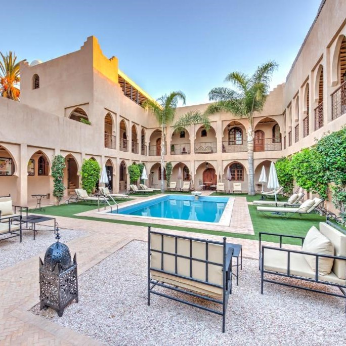
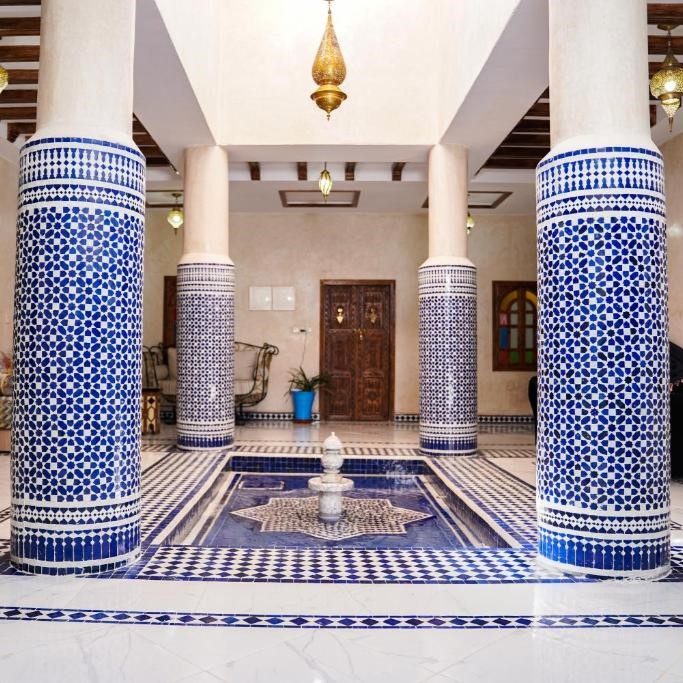
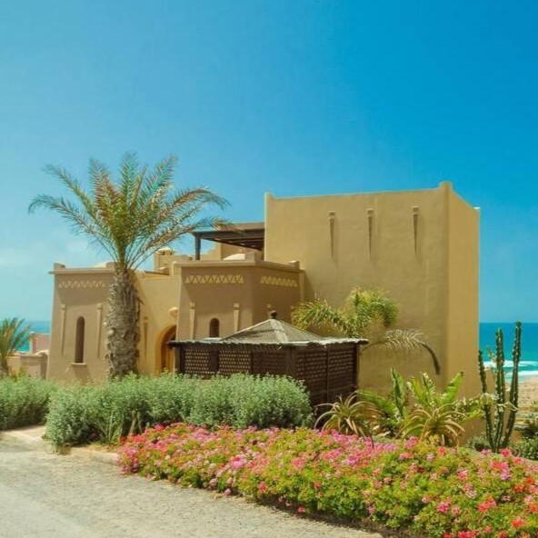
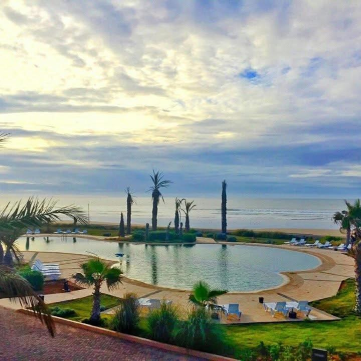

Hotels & Auberges
Riad Janoub

Niché au cœur de la médina de Tiznit, le Riad Janoub allie charme traditionnel et confort moderne
autour d’un patio verdoyant et d’une piscine apaisante. Son toit-terrasse ensoleillé offre une belle
vue sur la ville. Idéal pour découvrir la culture locale tout en se relaxant dans un cadre
authentique.
Riad Rkiya

Le Riad Rkiya charme par son atmosphère paisible et son élégant patio central, parfait pour se
détendre après une journée à explorer Tiznit. Ses chambres confortables allient simplicité et
authenticité marocaine. Un lieu accueillant où règnent calme et convivialité.
Dar Shem's

Face à l’océan, Dar Shem’s offre une villa spacieuse mêlant confort moderne et esprit balnéaire.
Idéale pour les groupes ou familles, elle séduit par ses vues sur mer, son grand jardin et ses
nombreuses activités à proximité. Parfaite pour un séjour d’évasion entre nature et aventure.
Villa Aglou

À deux pas de la plage d’Aglou, la Villa Aglou Center séduit par ses vues imprenables sur la mer et
ses deux piscines, intérieure et extérieure. Spacieuse et moderne, elle offre tout le confort pour
un séjour relaxant entre amis ou en famille. Un lieu parfait pour profiter du calme côtier et du
soleil.